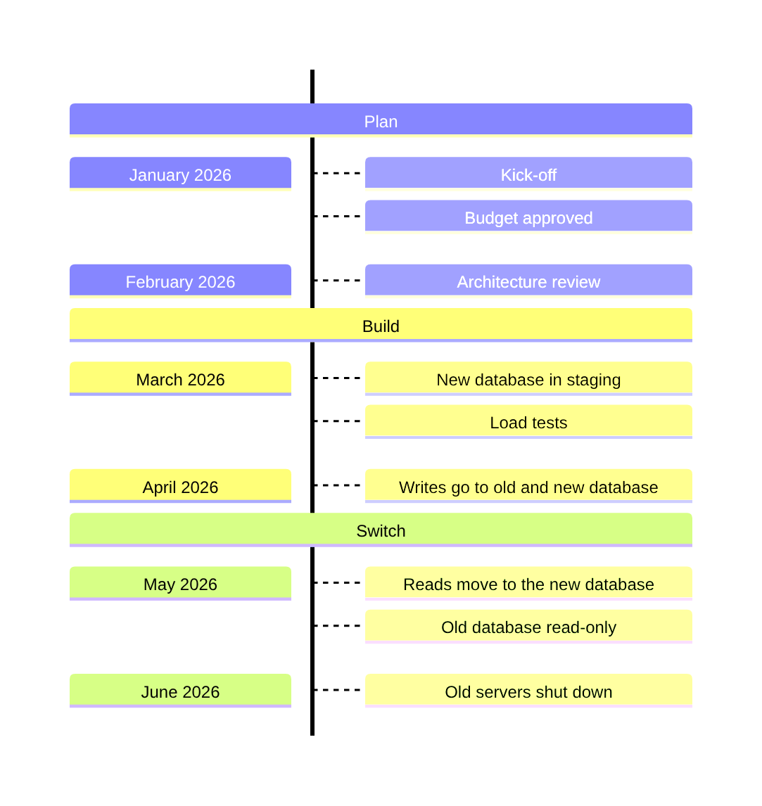

Guide · Confluence Cloud
Timeline in Confluence Cloud: Mermaid timelines, free
Confluence Cloud does not draw Mermaid on its own. Paste a Mermaid timeline block into a page and it stays a code block: readers see the dates and events as text, not as a timeline. A Mermaid app draws it. With Mermaid Editor for Confluence, a free app on the Atlassian Marketplace, you type the periods and what happened in each, and the timeline draws next to them while you type. Below: the steps, a migration plan to copy, how the syntax works, and the mistakes around colons.
What Confluence Cloud does with Mermaid on its own
Confluence Cloud does not draw Mermaid itself. In our tests in October and November 2026, a ```mermaid block pasted into a page became an ordinary code block: readers see the dates and events as text, not the diagram. The code is kept safely, but nothing is drawn.
To see the diagram you need a Mermaid app that adds a macro to the editor, or you draw the diagram elsewhere and upload a picture. How to add Mermaid diagrams to Confluence Cloud compares those routes.
How to add a timeline with Mermaid Editor for Confluence
Full disclosure: Dortus makes this app. The steps:
- A Confluence admin installs Mermaid Editor for Confluence from the Atlassian Marketplace. The app is free.
- Open the page in edit mode. Type
/mermaidand choose Mermaid Editor. You can also open the + insert menu in the toolbar and search for Mermaid Editor. - The editor opens with the code on the left and a live preview on the right. Click the Timeline example to start from a short roadmap, or paste the example from this page. If you paste a block that starts with
```mermaid, the fences are removed for you. - Change the text. The preview redraws as you type. If a line is wrong, the preview says what is wrong and names the line, and that line is marked in the code.
- Click Insert diagram, or press Ctrl+Enter (Cmd+Enter on a Mac). Publish the page.
- To change it later, select the diagram in the editor and click the pencil icon. Versions in the editor brings back any of the last 20 saves.
On the page the diagram fits the width of the page. Hover over it, or tab to it, for the zoom buttons. Click it, or use Open large, to see it in a big window. SVG and PNG download the diagram for a slide or an email. In Confluence’s dark mode the diagram is drawn in Mermaid’s dark colours. A PDF export of the page shows the diagram as a picture, made when you click Insert diagram; a Word export shows the Mermaid code. The app has 12 examples to start from: flowchart, sequence, class, state, Gantt, pie, mindmap, timeline, journey, ER, architecture and kanban.
Where it lives: the app runs on Atlassian Forge. The Mermaid code is saved in the macro on the page, earlier versions and the picture for PDF export in Forge storage in your own Atlassian site, and the diagram is drawn in the browser of the person reading the page. No diagram text leaves your Atlassian site. The app does count a few actions, such as a diagram inserted, as anonymous numbers; the privacy policy lists them.
Example: a migration by month
Six months of moving a billing service to the cloud, in three phases: plan, build and switch. Each month has one or more events. It runs from top to bottom, so six months stay readable on a page. Copy it and change the months and events to your own project.
timeline TD
section Plan
January 2026 : Kick-off : Budget approved
February 2026 : Architecture review
section Build
March 2026 : New database in staging
: Load tests
April 2026 : Writes go to old and new database
section Switch
May 2026 : Reads move to the new database : Old database read-only
June 2026 : Old servers shut down
Drawn with Mermaid 12.2, the version the app uses.
How the syntax works
timeline TDon the first line names the diagram type and runs it from top to bottom. Plaintimelineruns from left to right, which gets wide: in our test these six months took about 1,600 pixels.titleon its own line adds a heading. In our test withtimeline TDthe line of the timeline ran through the heading, so this example leaves it out; the page heading above the diagram does the job.- A line is a period, a colon, and an event:
February 2026 : Architecture review. The period is plain text; it can be a date, a quarter or a version number. - More events in the same period go on the same line, each after its own colon, or on the next lines starting with a colon.
- Put a space on both sides of each colon, as in
:. section Plangroups the periods below it, until the next section, under one heading and one colour.- The periods are spaced evenly in the order you write them. Mermaid does not read them as dates.
Let an AI assistant write the first version. ChatGPT and Claude can write Mermaid. Paste your list of dates and events, ask for a Mermaid timeline with sections, and paste the answer into the editor. Read the result: a clock time with a colon in it breaks the diagram, see below.
Common mistakes and how to fix them
- A colon inside the period. An incident timeline with
10:30 : Alert firesis an error, and the editor names the line, because the colon in 10:30 is read as the start of an event. Fix: write10.30, or10#58;30, which Mermaid draws as 10:30. - No space after the colon.
Q2:LaunchandQ2 :Launchwere errors in our test, whileQ2 : Launchworks. Fix: a space on both sides of the colon. - An event without a colon. A second line
Load testsunderMarch 2026 : New databasegives no error, but it became a period of its own instead of a second event in March. Fix: start the line with a colon,: Load tests. - An event before the first period. A line
: Kick-offright after the title has no period to belong to. Mermaid stops with an error that names no line (“Cannot read properties of undefined”). Fix: put the period first,January 2026 : Kick-off. - Expecting a time scale. A gap of one week and a gap of one year take the same space: the timeline lists periods in order, it does not measure time. Fix: if the length of each step matters, use a Gantt chart.
Other ways
Other Mermaid apps exist on the Atlassian Marketplace; the Mermaid guide lists points worth comparing. For a plan with start dates, durations and dependencies, a Gantt chart fits better. For a product roadmap that links to Jira work items, a roadmap tool in Jira does more than a drawing on a page.
FAQ
Can Confluence Cloud draw a timeline from text?
Not on its own. In our tests a pasted Mermaid timeline block stayed a code block. A Mermaid app such as Mermaid Editor for Confluence draws the timeline on the page.
What is the difference between a Mermaid timeline and a Gantt chart?
A timeline lists periods in order with events under each, spaced evenly. A Gantt chart puts tasks on a date scale with start dates, durations and dependencies. Use a timeline for a history or a roadmap overview, a Gantt chart for a plan.
How do I put a time like 10:30 in a timeline?
Write 10.30, or 10#58;30, which Mermaid draws as 10:30. A plain colon in the period is read as the start of an event and gives an error.
How do I add more than one event to a period?
Add each event after its own colon on the same line, for example May 2026 : Reads move : Old database read-only. Or put each event on the next line, starting with a colon.
Can the timeline run from top to bottom?
Yes. Write timeline TD on the first line instead of timeline, as in the example on this page. The periods then run down the page with their events beside them, which stays narrow for a long list. Plain timeline runs from left to right.
By diagram type
A timeline shows periods in order with what happened in each. Mermaid diagram examples for Confluence has a short example of each of twelve diagram types. Guides that go deeper on one type:
- Gantt charts in Confluence Cloud
- Sequence diagrams in Confluence Cloud
- Mind maps in Confluence Cloud
- ER diagrams (entity relationship) in Confluence Cloud
- Class diagrams in Confluence Cloud
- State diagrams in Confluence Cloud
- Pie charts in Confluence Cloud
- Flowcharts in Confluence Cloud
Questions
An example that does not draw for you, or a mistake we missed? Email support@dortus.com.
Mermaid Editor for Confluence by Dortus
Type the diagram, watch it draw
A Confluence macro with Mermaid code on the left and a live preview on the right. The code stays in the page, so the diagram stays editable. Runs on Atlassian Forge.
See also: How to add Mermaid diagrams to Confluence Cloud (including diagrams from ChatGPT or Claude)